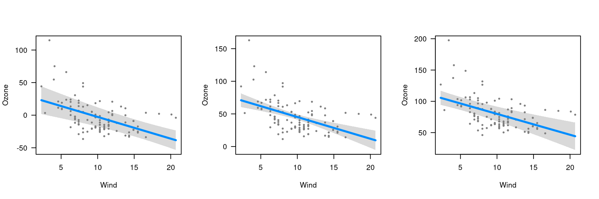

As noted in getting started, the default
behavior of visreg when constructing a conditional plot is
to fill in the other variables with either the median (for continuous
variables) or the most common category (for categorical variables). This
can be modified using the cond argument, which offers more
explicit control over what to condition on. Note that this has no
bearing on contrast plots (at least, in the absence of interactions),
which do not depend on the other terms in the model.
The cond argument must be provided as a named list. Each
element of that list specifies the value for one of the terms in the
model; any elements left unspecified are filled in with the median/most
common category. For example, let’s construct the a plot of wind
vs. ozone, but condition on three different values for temperature: (1)
a cold temperature of 50 degrees (2) the default median temperature of
79 degrees and (3) a hot temperature of 100 degrees.
fit <- lm(Ozone ~ Solar.R + Wind + Temp, data=airquality)
par(mfrow=c(1,3))
visreg(fit, "Wind", cond=list(Temp=50))
visreg(fit, "Wind")
visreg(fit, "Wind", cond=list(Temp=100))
A few observations/remarks:
- The values on the vertical axis differ; as we condition on higher temperatures, the expected ozone concentration goes up since the regression coefficient for temperature is positive
- The slope of the line, the distance from the line to each residual, and the range of the residuals is the same in all three plots; conditioning on different values of temperature merely adds a constant to the regression line and the partial residuals.
- The width of the confidence band does change, however: the data set has few observations at very high and very low temperatures, so the standard errors are much larger for the plots on the right and left than for the plot in the middle.
- The shape of the confidence band also changes. In the middle plot, the confidence band is narrowest in the middle and wider at the ends. In the left plot (conditioning on low temperature), however, the confidence band is narrowest for high wind levels. This arises because there is a negative correlation between wind and temperature (=-0.46), and thus, more cold windy days in the data set than cold calm days. The opposite phenomenon happens in the right plot, where the relative absence of hot windy days causes the confidence band to be wider for high winds than for low winds.
Finally, recall that this model had three explanatory variables; in
the above example, visreg calculated the conditional
response by filling in solar radiation with its median value, as it was
not specified otherwise in the cond argument.